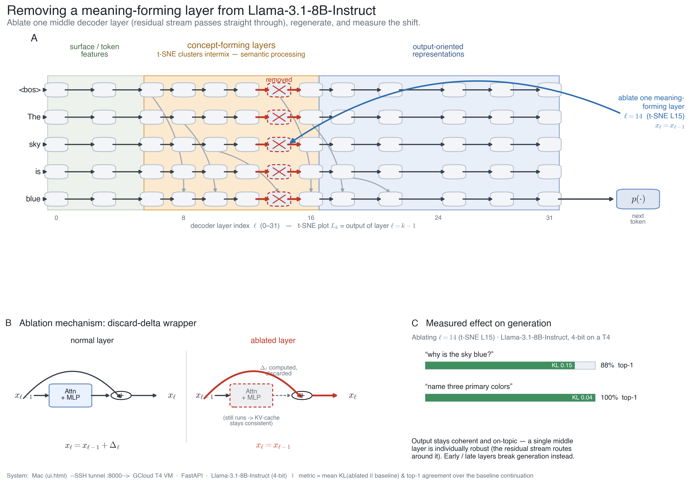
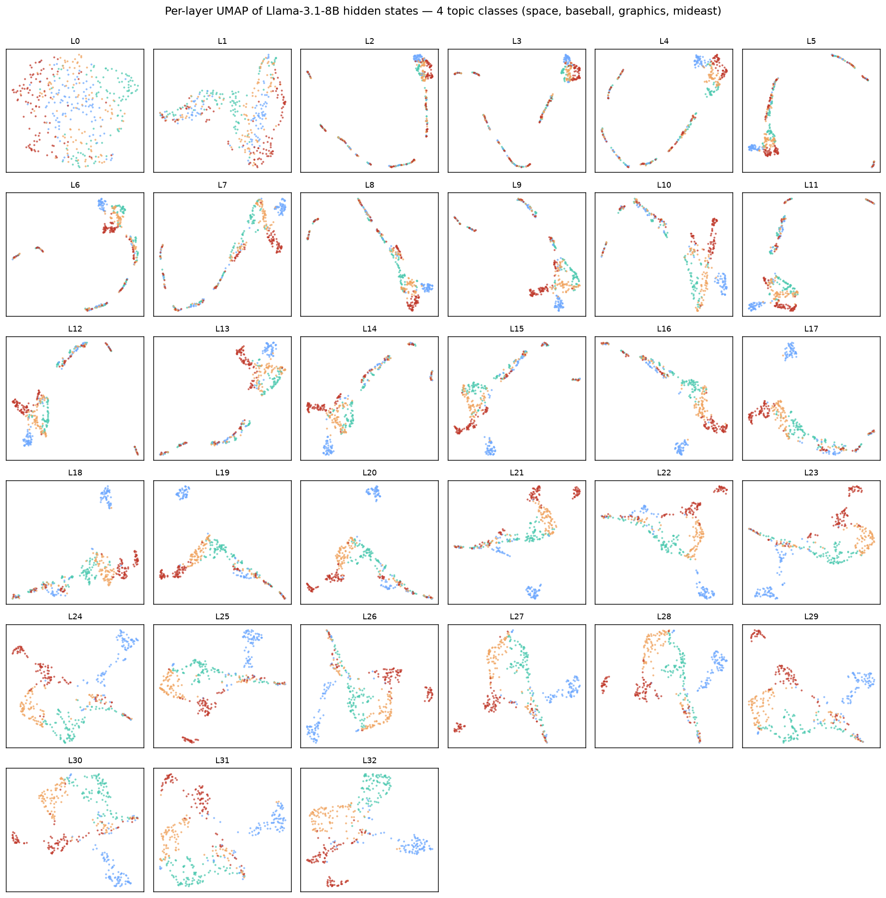
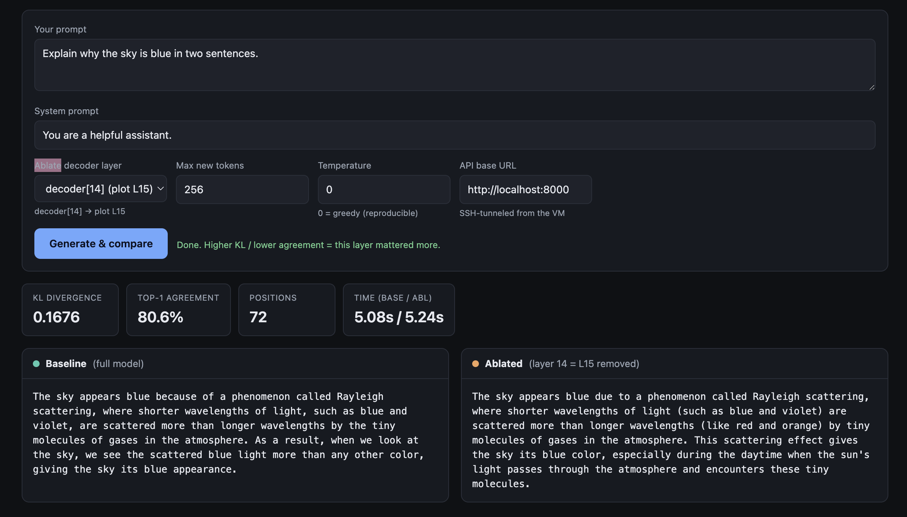
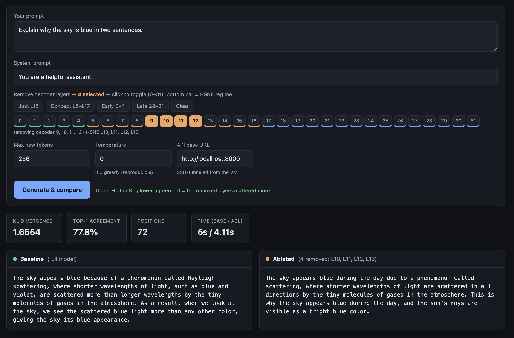
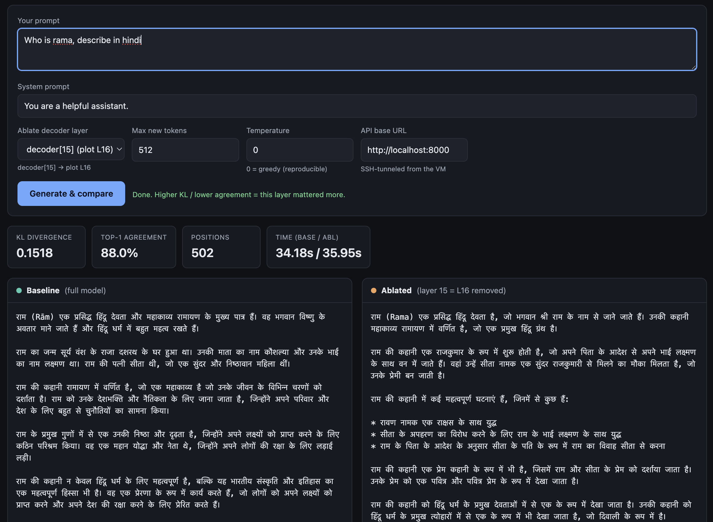

Where Does a Language Model Think? Finding and Removing the 'Workspace' Layers of Llama-3.1-8B
A hands-on interpretability walkthrough. We watch concepts form layer-by-layer inside Llama-3.1-8B-Instruct, measure precisely which layers carry meaning, then delete layers — one at a time and in whole bands — and quantify exactly how generation degrades. Every chart below is interactive and driven by the real run data; everything ran on a single 16 GB T4 GPU. We close by connecting the result to Anthropic's 2026 "global workspace" finding.

TL;DR. Topic information becomes decodable within the first few layers and stays decodable everywhere (kNN ≈ 0.9 from layer 2 on). Yet through the first half of the network the classes are visually entangled — they collapse onto overlapping manifolds (silhouette ≈ 0) — and only re-separate into clean clusters in the second half. That entangled-but-decodable middle is where meaning is worked on. Deleting one middle layer barely dents generation; deleting the whole band collapses reasoning while leaving shallow recall intact — the same asymmetry Anthropic report when they suppress the J-space / global workspace [10]. Across 100 queries, removing the band breaks creative / abstract generation first and single-step recall last.
0. Setup
- Model.
meta-llama/Llama-3.1-8B-Instruct— 32 residual decoder layers, hidden width 4096, sooutput_hidden_states=Trueyields 33 residual-stream tensors (L0= embeddings;Lk= the output of decoder blockk−1— mind this off-by-one throughout). - Compute. One NVIDIA T4 (16 GB), model quantised to 4-bit (nf4).
- Data. 400 texts, 4 balanced topic classes from 20-Newsgroups (space, baseball, graphics, mideast), mean-pooled per layer.
- Two instruments. (1) a per-layer probe of the hidden states, and (2) a reversible layer-ablation wrapper that turns any decoder block into an identity so the residual stream skips it (§3).
The full code, weights recipe, and the interactive tool are in the repo:
rockerritesh/nlp-remove-jspace-layer.
1. First, a clarification: KL divergence is not entropy
This question started the whole project, and it is worth getting straight because every ablation number below is a KL. Three related-but-distinct quantities:
| Quantity | Formula | Measures | # dists |
|---|---|---|---|
| Entropy $H(p)$ | $-\sum_i p_i \log p_i$ | uncertainty of one distribution | 1 |
| Cross-entropy $H(p,q)$ | $-\sum_i p_i \log q_i$ | coding $p$ using $q$ | 2 |
| KL divergence $D_{\mathrm{KL}}(p\,\|\,q)$ | $\sum_i p_i \log \tfrac{p_i}{q_i}$ | how far $p$ is from reference $q$ | 2 |
They are tied together by one identity:
$$ D_{\mathrm{KL}}(p\,\|\,q) \;=\; H(p,q) - H(p), \qquad D_{\mathrm{KL}} \ge 0, \qquad D_{\mathrm{KL}}(p\,\|\,q)=0 \iff p=q . $$
- Entropy is about one distribution — how spread out / uncertain it is.
- KL divergence ("relative entropy") is about two — how far the ablated model's next-token distribution $p_{\text{abl}}$ has moved from the intact reference $p_{\text{base}}$. It is asymmetric.
So "measure the KL of removing a layer" means computing $D_{\mathrm{KL}}(p_{\text{abl}}\,\|\,p_{\text{base}})$ at each position — how much did deleting this layer change the predictions? We also report entropy $H(p_{\text{abl}})$ separately, because a broken model can fail two ways: become uncertain (entropy ↑, the distribution flattens) or get stuck (entropy ↓, it repeats). KL catches both; entropy tells you which.
2. The two probes: decodable vs. visually separated
For every layer we take two measurements on the same mean-pooled hidden states:
(a) Class decodability — can a classifier still read the topic off the full 4096-d state? We use a 5-fold cross-validated $k$-NN ($k=15$) on standardized features:
$$ \text{acc}(\ell) \;=\; \tfrac{1}{5}\sum_{f=1}^{5} \operatorname{Acc}\!\big(\text{kNN}_{15};\, H^{(\ell)}_{\text{test}(f)}\big), \qquad H^{(\ell)}\in\mathbb{R}^{400\times 4096}. $$
(b) Visual separation — how cleanly do the classes separate in the 2-D UMAP projection? We use the mean silhouette coefficient, where for point $i$ with in-class mean distance $a_i$ and nearest-other-class mean distance $b_i$,
$$ s_i \;=\; \frac{b_i - a_i}{\max(a_i,\,b_i)} \;\in[-1,1], \qquad \text{silhouette}(\ell) \;=\; \tfrac{1}{N}\sum_i s_i . $$
Decodability asks is the information present? Silhouette asks is it laid out in big, separated directions? The gap between them is the whole story, and it is the first interactive figure below. But first — what does the raw geometry look like?
3. Experiment 1 — watch the representation reorganise, layer by layer
Push the 4-class set through the model, mean-pool the hidden state at each layer, project each layer to 2-D with UMAP [8], colour by class:

- Embeddings / early (≈ L0–L5).
L0is a diffuse cloud; byL2–L6the points collapse onto thin, folded 1-D manifolds with the four topics interleaved along the curve. - Middle (≈ L6–L16). Still entangled — clusters overlap heavily; one class
(graphics) begins to peel off around
L11–L14. - Late (≈ L18–L32). Clean 4-way separation emerges and sharpens all the way to the final layer.
The representation goes entangle → re-specialise, echoing the logit lens [1], the tuned lens [2], and Tenney et al.'s "BERT rediscovers the classical NLP pipeline" [4].
Careful. UMAP / t-SNE are nonlinear 2-D projections [8]. "Looks entangled" is a statement about the projection, not about whether the class is present. The next figure checks exactly that — and the answer flips the naive reading.
3b. The workspace signature (decodable ≫ visually separated)
Here is the crux. Decodability (how well a classifier reads the class off the full state) against visual separation (silhouette on the projection), per layer:
- Decodability (blue) is high everywhere:
0.68at the embeddings,~0.90by layer 5, and it stays0.86–0.93for the entire rest of the network. The class is always readable from layer 2 on. - Visual separation (green) tells the opposite story early: silhouette hovers
near 0 (even negative) through roughly
L1–L15, then climbs steeply to0.49at the final layer.
The gap — high decodability, near-zero visual separation — is the signature of a distributed, entangled code: the information did not leave, it went into overlapping directions (superposition [5]). This is precisely the regime Anthropic's workspace lives in: their J-space carries the concepts the model reasons over while occupying only ~6–10 % of activation variance [10]. High information, low variance — a workspace, not a bottleneck.
4. Experiment 2 — turning a layer off
Every decoder block is residual:
$$ x_{\ell} \;=\; x_{\ell-1} \;+\; \operatorname{Attn}_\ell(x_{\ell-1}) \;+\; \operatorname{MLP}_\ell(x_{\ell-1}) \;=\; x_{\ell-1} + \Delta_\ell(x_{\ell-1}). $$
To remove layer $\ell$ we wrap it so it still runs — keeping the KV-cache consistent for the layers above — but discards its update $\Delta_\ell$ and returns its input unchanged:
$$ \tilde x_{\ell} \;=\; x_{\ell-1} \qquad(\text{i.e. } \Delta_\ell \mapsto 0). $$
Reversible, no retraining — the layer-level analogue of activation patching / causal tracing [3]. In code it is a ten-line module:
class AblatedDecoderLayer(nn.Module):
"""Runs the layer (keeps the KV cache consistent) but returns the *input*
hidden states, so the residual stream skips this layer."""
def __init__(self, orig): super().__init__(); self.orig = orig
def forward(self, hidden_states, *args, **kwargs):
out = self.orig(hidden_states, *args, **kwargs) # still populates KV cache
if isinstance(out, tuple):
return (hidden_states,) + tuple(out[1:]) # discard the new hidden state
return hidden_states
Diagrammatically:
(runs, keeps KV cache)"] B2 -. Δ discarded .-> X(("·")) A2 ==>|returned unchanged| C2["xout = xin"] end
The metric. For each prompt we take the intact model's greedy continuation, then re-run the model teacher-forced on that same continuation with layer(s) ablated, and compare the two next-token distributions at every position:
$$ \overline{D_{\mathrm{KL}}} \;=\; \frac{1}{T}\sum_{t=1}^{T} D_{\mathrm{KL}}\!\big(p^{(t)}_{\text{abl}} \,\big\|\, p^{(t)}_{\text{base}}\big), \qquad \text{top-1} \;=\; \frac{1}{T}\sum_{t=1}^{T} \mathbf{1}\!\left[\arg\max p^{(t)}_{\text{abl}} = \arg\max p^{(t)}_{\text{base}}\right]. $$
Teacher-forcing on the same tokens is what makes the comparison fair: both models see identical context, so any divergence is the ablation's doing, not drift.
5. Experiment 3 — remove each layer, one at a time
Now ablate every single decoder layer in turn and measure the effect. Toggle the metric (top-1 agreement, KL, entropy, perplexity) and switch between the 8-prompt sweep and the 100-query sweep with ±1σ bands:
It is not a symmetric U — it is an early cliff:
- Layers 0–1 are load-bearing. Remove
L0→ KL ≈ 17–18, top-1 6–7 %, perplexity in the thousands. RemoveL1→ KL ≈ 13–14, top-1 23–24 %. The model is destroyed. - Every other single layer is remarkably survivable. Across
L2–L29the top-1 agreement sits at 89–96 % with KL ≈0.05–0.22and perplexity barely above the1.10baseline. Middle layers are individually the most redundant — which is exactly why depth-pruning methods delete them [6, 7]. - The final layer matters a bit more:
L31→ KL ≈ 0.98–1.18, top-1 ≈ 81–88 %.
Across 100 queries the picture is rock-solid: exactly two layers (L0, L1) are
individually catastrophic; everything else routes around a single missing block.
Here is the intact model vs. removing just the middle L15 on "explain why the sky
is blue" — the outputs are near-identical (KL 0.17, top-1 81 %):

One missing middle block? The residual stream just re-routes around it.
6. Experiment 4 — remove the whole band → the workspace collapses
Individually redundant ≠ collectively expendable. Delete a growing contiguous window of middle layers (centred ~`L11`) and watch the model fall over. Toggle metric and sample size:
A graceful-then-catastrophic collapse — the numbers (100-query means):
| layers removed | 1 | 2 | 4 | 6 | 8 | 10 | 12 | 14 |
|---|---|---|---|---|---|---|---|---|
| KL | 0.18 | 0.39 | 1.5 | 3.9 | 5.6 | 9.9 | 13.9 | 16.9 |
| top-1 | 91 % | 86 % | 79 % | 67 % | 54 % | 40 % | 22 % | 12 % |
The interactive tool makes the failure mode visible. Removing four middle layers (L10–L13) still gives a coherent — if shallower — answer:

…but push to the whole 12-layer concept band and the output degenerates into "…the sky is a beautiful blue and the sky is a beautiful blue. It's a blue collar, a blue collar…" — the word "blue" survives, the explanation does not (KL ≈ 15.6, top-1 ≈ 20 %). Individually the layers are spare tyres; together they are the engine.
7. Which capability breaks first? (and a language-adherence surprise)
Splitting the band-removal effect by query type — 20 prompts each of recall, math, reasoning, translation, creative — asks the question the workspace account really cares about: when you remove the band, does abstraction break before recall?
Through the informative mid-range (4–10 layers removed) the ordering is consistent: single-step recall is the most robust; open-ended / creative generation collapses first, with reasoning and translation in between. That is the direction Anthropic's workspace result predicts — abstract, generative capability leans hardest on the middle band; shallow recall leans on it least. Two honest caveats: the separation is graded, not on/off, and beyond ~12 layers removed everything converges toward collapse (the ordering gets noisy once the model is already broken).
A language-adherence surprise
A striking qualitative case, straight from the interactive tool. Ask Llama to answer in Hindi and remove a single middle layer — the Devanagari answer is preserved essentially intact (KL 0.15, top-1 88 %):

But remove the middle band on the same Hindi prompt and the model switches back to English and starts repeating — the content limps on, but the instruction to stay in the target language is gone:
That is a small, vivid instance of a general point: instruction- and language-adherence live in the same mid-network band as abstract reasoning, and they are among the first things to go. It also connects to a companion line of work on inference-time representation steering for Devanagari sister-languages — where the Hindi→target transfer direction lives in exactly this re-divergence-onset region of the network.
Try it yourself
The interactive UI (ui.html) drives the 8B model on a GPU box through an SSH
tunnel: type any prompt, toggle any subset of the 0–31 decoder layers (with
regime-coloured presets — Concept L6–L17, Early, Late), and get
baseline-vs-ablated generations side by side with live KL and top-1. Because it
needs the model weights on a GPU it can't run inline here, but the whole thing —
server.py, ui.html, client.py, and the experiment scripts — is in the
repo.
8. The connection: a blunt version of the "global workspace"
Anthropic's "Verbalizable Representations Form a Global Workspace in Language Models" (Gurnee, Sofroniew, … Lindsey; July 2026) [10] introduces the Jacobian lens (J-lens), which surfaces a small set of token-aligned directions in the intermediate layers — the J-space — that behaves like a cognitive-science global workspace [9]: a shared "blackboard" the model reads concepts from and reasons over, occupying only ~6–10 % of activation variance. When they suppress the top J-space directions:
| Impaired | Preserved |
|---|---|
| multi-hop reasoning (→ ~0 %) | text parsing, grammatical fluency |
| creative / abstract generation | shallow classification, fact extraction |
| experiential self-report | single-step factual recall |
Our coarse experiment — deleting whole layers rather than surgical directions — reproduces the same asymmetry: kill the middle band and reasoning / abstraction dies while shallow recall survives (§7). And §3b shows why that band is special: it is where the topic is maximally entangled yet fully decodable — an information-rich, low-variance workspace. The layers where the classes stop looking separated are exactly the layers you cannot remove as a group without losing the ability to reason. That is where the workspace lives.
9. Related work
Depth redundancy & layer pruning. That a single middle layer is nearly free to drop is the empirical backbone of the depth-pruning literature. Gromov et al., The Unreasonable Ineffectiveness of the Deeper Layers [6], and Men et al., ShortGPT [7], both show you can delete a large contiguous block of upper-middle layers with little loss (after light healing). Our single-layer sweep (§5) independently reproduces their premise on Llama-3.1-8B; our band-removal collapse (§6) marks where "little loss" ends.
Which layers do what. A 2025 line of work makes the capability split precise. Demystifying the Roles of LLM Layers in Retrieval, Knowledge, and Reasoning (arXiv:2510.02091) [11] shows shallow layers dominate retrieval while middle and deep layers are where reasoning (e.g. GSM8K) is sensitive — the direct, correctness-graded version of our §7. On the Limits of Layer Pruning for Generative Reasoning in LLMs (arXiv:2602.01997) [12] studies exactly when pruning breaks generative reasoning, matching our graceful-then-catastrophic band curve.
Scalpel, not sledgehammer. Where we ablate whole layers, others ablate directions or neurons. The Achilles' Heel of LLMs (arXiv:2510.10238) [13] shows a handful of neurons can cripple core language ability, and Sparse Neuron Ablation Triggers Catastrophic Collapse of the Language Core (arXiv:2512.00918) [14] finds a small "language core" whose ablation collapses fluency — the fine-grained analogue of our band collapse, and closer in spirit to the J-space's low-rank subspace [10].
Reading the residual stream. The probing view builds on the logit lens [1] and tuned lens [2], on Tenney et al.'s layer-wise "NLP pipeline" [4], on superposition [5] as the reason a code can be decodable yet entangled, and on activation patching / causal tracing [3] as the intervention template that layer ablation coarsens.
10. Honest caveats
- Layer ≠ subspace. We remove entire layers (sledgehammer); the J-space is a low-rank subspace within layers (scalpel). Layer ablation is a coarse, correlational proxy for workspace ablation — a directional replication, not a reproduction.
- The metric is a proxy. Top-1 agreement measures "output preserved vs. the intact model's own greedy continuation," not correctness. A confident wrong answer and a confident right answer both score high.
- Regime boundaries are eyeballed. The three-band story is a reading of the UMAP grid; §3b's decodability-vs-silhouette gap is the load-bearing evidence, and mean-pooling + UMAP shape the early-layer picture in particular.
- Scope. One model, 4-bit, 20-Newsgroups (400 texts) + 8/100 prompts, short greedy continuations. Directional, not a benchmark.
Still — a satisfying result on a single T4: the layers where classes stop looking separated are precisely the layers you can't remove as a group without losing the ability to reason.
11. Reproduce
# On the GPU box (VM):
python server.py --load-4bit # FastAPI on :8000 (4-bit for a T4)
python experiments/run_experiments.py # UMAP grid, separability, ablation (8-prompt)
python experiments/run_queries100.py # 100-query sweep + per-category + CSV/JSON
# From a laptop: tunnel + open ui.html, ablate any subset of layers interactively
gcloud compute ssh <vm> -- -N -L 8000:localhost:8000
Code, data, and figures: rockerritesh/nlp-remove-jspace-layer.
References
- nostalgebraist (2020). Interpreting GPT: the Logit Lens. LessWrong.
- Belrose et al. (2023). Eliciting Latent Predictions from Transformers with the Tuned Lens. arXiv:2303.08112.
- Meng, Bau, Andonian, Belinkov (2022). Locating and Editing Factual Associations in GPT (ROME / causal tracing). NeurIPS. arXiv:2202.05262.
- Tenney, Das, Pavlick (2019). BERT Rediscovers the Classical NLP Pipeline. ACL. arXiv:1905.05950.
- Elhage et al. (2022). Toy Models of Superposition. Anthropic / Transformer Circuits.
- Gromov, Tirumala, Shapourian, Glorioso, Roberts (2024). The Unreasonable Ineffectiveness of the Deeper Layers. arXiv:2403.17887.
- Men et al. (2024). ShortGPT: Layers in Large Language Models are More Redundant Than You Expect. arXiv:2403.03853.
- McInnes, Healy, Melville (2018). UMAP. arXiv:1802.03426. · van der Maaten & Hinton (2008). t-SNE. JMLR.
- Baars (1988); Dehaene et al. — Global Workspace Theory of consciousness (the analogy).
- Gurnee, Sofroniew, Pearce, … Lindsey (2026). Verbalizable Representations Form a Global Workspace in Language Models. Anthropic. https://transformer-circuits.pub/2026/workspace/
- Demystifying the Roles of LLM Layers in Retrieval, Knowledge, and Reasoning (2025). arXiv:2510.02091.
- On the Limits of Layer Pruning for Generative Reasoning in Large Language Models (2026). arXiv:2602.01997.
- The Achilles' Heel of LLMs: How Altering a Handful of Neurons Can Cripple Language Abilities (2025). arXiv:2510.10238.
- Sparse Neuron Ablation Triggers Catastrophic Collapse of the Language Core in Large Vision-Language Models (2025). arXiv:2512.00918.
Built on a GCloud T4 VM · Llama-3.1-8B-Instruct (4-bit) · interactive charts driven
by metrics.json / metrics_100.json from the run · figures from
experiments/run_experiments.py.
Cite this post
Auto-generated. Verify for your institution's requirements.